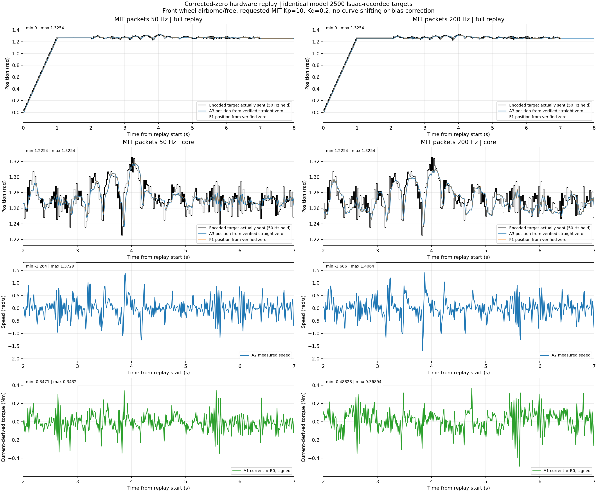
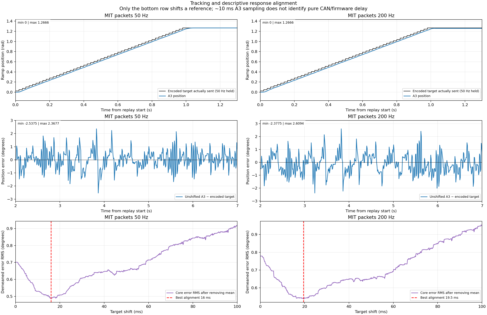
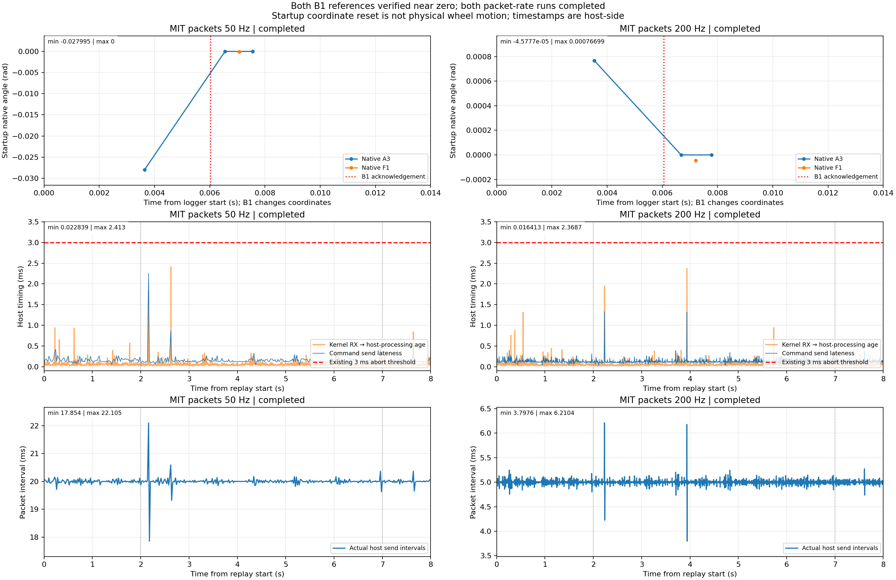
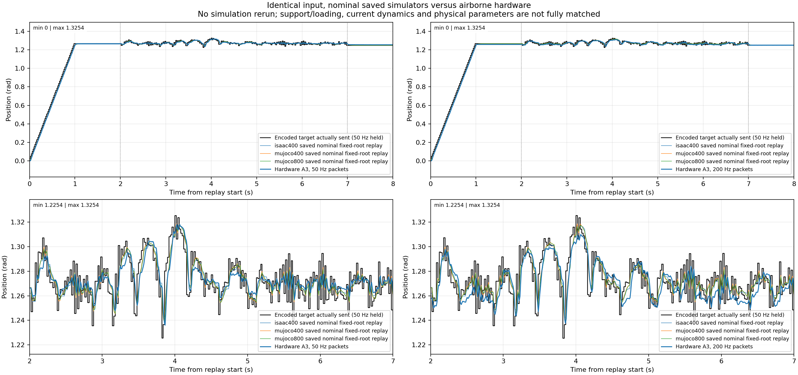
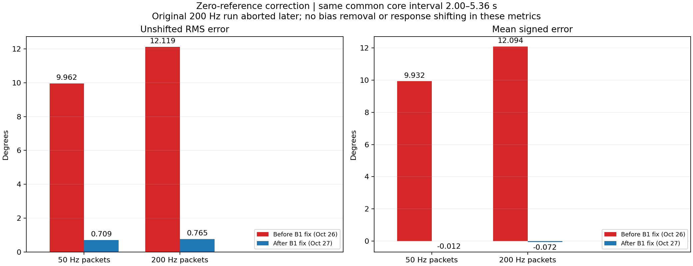

2026-10-27 · same 50 Hz-held targets · 50 versus 200 Hz MIT packets · airborne/free steering.
Both runs completed with verified near-zero references. Core RMS errors: 0.701° / 0.788°. No improvement established at 200 Hz. Plotted responses are unshifted.
Report · Exact statistics · Summary CSV




